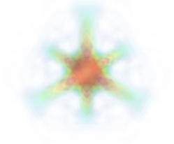

An overview of Mayavi¶
Section summary
This section gives a quick summary of what is Mayavi, and should help you understand where, in this manual, find relevant information to your use case.
Introduction¶
Mayavi2 seeks to provide easy and interactive visualization of 3D data, or 3D plotting. It does this by the following:
- an (optional) rich user interface with dialogs to interact with all data and objects in the visualization.
- a simple and clean scripting interface in Python, including ready to use 3D visualization functionality similar to matlab or matplotlib (using mlab), or an object-oriented programming interface.
- harnesses the power of VTK without forcing you to learn it.
Additionally, Mayavi2 strives to be a reusable tool that can be embedded in your libraries and applications in different ways or be combined with the Envisage application-building framework to assemble domain-specific tools.
What is Mayavi2?¶
Mayavi2 is a general purpose, cross-platform tool for 3-D scientific data visualization. Its features include:
- Visualization of scalar, vector and tensor data in 2 and 3 dimensions.
- Easy scriptability using Python.
- Easy extendibility via custom sources, modules, and data filters.
- Reading several file formats: VTK (legacy and XML), PLOT3D, etc.
- Saving of visualizations.
- Saving rendered visualization in a variety of image formats.
- Convenient functionality for rapid scientific plotting via mlab (see mlab: Python scripting for 3D plotting).
Unlike its predecessor Mayavi1, Mayavi2 has been designed with
scriptability and extensibility in mind from the ground up. Mayavi2
provides a mayavi2 application which is usable by itself. However,
Mayavi2 may also be used as a plotting engine, in scripts, like with
matplotlib or gnuplot, as well as a library for interactive
visualizations in any other application. It may also be used as an
Envisage plug-in which allows it to be embedded in other Envisage
based applications natively.
Technical details¶
Mayavi2 provides a general purpose visualization engine based on pipeline architecture similar to that used in VTK. Mayavi2 also provides an Envisage plug-in for 2D/3D scientific data visualization. Mayavi2 uses the Enthought Tool Suite (ETS) in the form of Traits, TVTK and Envisage. Here are some of its features:
Pythonic API which takes full advantage of Traits.
Mayavi can work natively and transparently with numpy arrays (this is thanks to its use of TVTK).
Easier to script than Mayavi-1 due to a much cleaner MVC design.
Easy to extend with added sources, components, modules and data filters.
Provides an Envisage plug-in. This implies that it is:
- easy to use other Envisage plugins in Mayavi. For example, Mayavi provides an embedded Python shell. This is an Envisage plug-in and requires one line of code to include in Mayavi.
- easy to use Mayavi inside Envisage based applications. Thus, any envisage based application can readily use the mayavi plug-in and script it to visualize data.
wxPython/Qt4 based GUI (thanks entirely to Traits, PyFace and Envisage). It is important to note that there is no wxPython or Qt4 code used directly in the Mayavi source.
A non-intrusive reusable design. It is possible to use Mayavi without a wxPython or Qt4 based UI.
Note
All the following sections assume you have a working Mayavi, for information on downloading and installing Mayavi, see the next section, Installation.
Using Mayavi as an application, or a library?¶
As a user there are three primary ways to use Mayavi:
Use the
mayavi2application completely graphically. More information on this is in the Using the Mayavi application section.Use Mayavi as a plotting engine from simple Python scripts, for example from Ipython, in combination with numpy. The
mlabscripting API provides a simple way of using Mayavi in batch-processing scripts, see mlab: Python scripting for 3D plotting for more information on this.Script the Mayavi application from Python. The Mayavi application itself features a powerful and general purpose scripting API that can be used to adapt it to your needs.
- You can script Mayavi while using the
mayavi2application in order to automate tasks and extend Mayavi’s behavior.- You can script Mayavi from your own Python based application.
- You can embed Mayavi into your application in a variety of ways either using Envisage or otherwise.
More details on this are available in the Advanced Scripting with Mayavi chapter.
Scenes, data sources, and visualization modules: the pipeline model¶
Mayavi uses pipeline architecture like VTK. As far as a user is concerned this basically boils down to a simple hierarchy.
Data is loaded into Mayavi and stored in a data source (either using a file or created from a script). Any number of data files or data objects may be opened. Data sources are rich objects that describe the data, but not how to visualize it.
This data is optionally processed using Filters that operate on the data and visualized using visualization Modules. The filters and modules are accessible in the application via the Visualize menu on the UI or context menus on the pipeline. They may also be instantiated as Python objects when scripting Mayavi.
The reasons for separation between data source, the data container, and the visualizations tools used to look at it, the modules, is that there are many different ways of looking at the same data. For instance the following images are all made by applying different modules to the same data source:


All objects belong to a Scene – this is an area where the 3D visualization is performed. In the interactive application, new scenes may be created by using the File->New->VTK Scene menu.
Loading data into Mayavi¶
Mayavi is a scientific data visualizer. There are two primary ways to make your data available to it:
- Store your data in a supported file format like VTK legacy or VTK XML files etc. See VTK file formats for more information on the VTK formats. These files can be loaded in the interactive application using the menus.
- Generate a TVTK dataset via numpy arrays or any other sequence. This is easiest done by using the scripting APIs, for instance mlab (see the paragraph on creating data sources with mlab, or simply the 3D plotting functions: 3D Plotting functions for numpy arrays).
Alternatively, if you wish to gain a deeper understanding by creating VTK data structures or files, more information on datasets in general is available in the Data representation in Mayavi section.